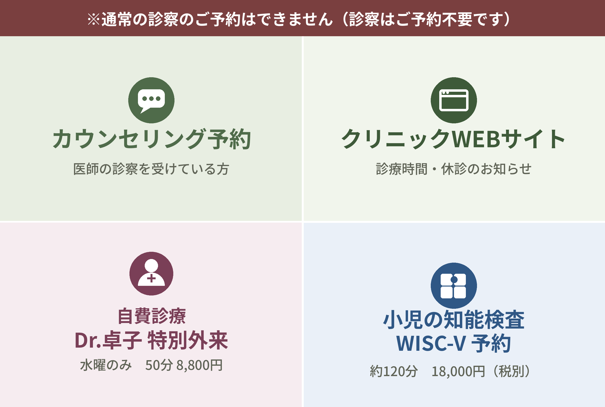

墨
成城墨岡クリニック予約
成城墨岡クリニックです。友だち追加ありがとうございます。 下のメニューから、カウンセリング・Dr.卓子 特別外来（自費・水曜）・WISC-V検査のご予約を申請できます。 ※通常の診察のご予約はできません（診察はご予約不要です）。
17:20

① 下のメニューから選ぶ
墨
成城墨岡クリニック予約
Dr.卓子特別外来の予約
既読 17:21
Dr.卓子 特別外来（自費診療・50分 8,800円）のご予約ですね。 ※水曜日のみ（祝日を除く）、1時間ごとの枠からお選びいただけます。
17:21
第1希望の日付を選んでください（水曜日のみ・祝日を除く）
17:21
第1希望：12月2日(水)
既読 17:21
12月2日(水) ご希望の時間を選んでください
17:21
10:00〜10:50
11:00〜11:50
14:00〜14:50
15:00〜15:50
16:00〜16:50
17:00〜17:50
日付を選び直す
メッセージを入力
② 希望の日時をボタンで選ぶ
墨
成城墨岡クリニック予約
ご予約の申請を受け付けました（予約番号 2604）。 まだ確定ではありません。受付・担当者が確認のうえ、このLINEで確定のご連絡をいたします。
17:22
ご予約が確定しました
カウンセリング
日時：12月2日(水) 14:00
担当：五味 新
お名前：山本 さくら 様
当日は受付でお名前をお伝えください。
ご質問・変更は、このトークにそのまま送ってください。
成城墨岡クリニック 03-3749-1122
メッセージを入力
③ 確定のお知らせが届く
墨
成城墨岡クリニック予約
12月2日の予約を、翌週の同じ時間に変更できますか？
既読 18:02
メッセージを受け付けました。受付・担当者から、このLINEでお返事します。
18:02
受付 山田より
12月9日(水) 14:00で変更できます。こちらでよろしいですか？
ご質問・変更は、このトークにそのまま送ってください。
メッセージを入力
④ 変更・質問はトークで